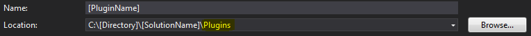
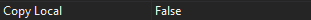
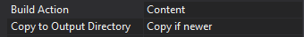

This presentation outlines my process used to intially create a NopCommerce plugin. This is just the starting point for your plugin and you will need to implement an interface for the type of plugin you are implementing after this.
For Reference:
Create a new Class Library Project inside the Plugins Directory of the NopCommerce Solution.
You absolutely MUST change the location of the project to ~\[ProjectName]\Plugins\ as it will default to be in ~\[ProjectName]\.

The naming convention for the ProjectName is Nop.Plugin.[PluginType].[ProjectName]
Important Note:
If you do not place the project in the \Plugins\ directory your files will not be where nop expects them. So your plugin structure will be off and it will cause problems when you want to run, install your plugin, or put it in source control.
Important Note:
It is absolutely crucial that any library referenced in the \Presentation\Nop.Web\bin\ directory have the property of CopyLocal set to False. If this is not set correctly a conflict of files/versions can cause a presentation dll to be overwritten and this can bring down a production NopCommerce server. As a rule of thumb look at the \Presentation\Nop.Web\bin\ directory for any library you add and see if it already exists, if it does set CopyLocal to False.

Typically you will need to add at least the below libraries used by NopCommerce as references in your plugin project. Again, make certain they are not copying locally on build if they are already present in nop's presentation bin directory.
Manage NuGet Packages to install.)PropertiesBuild tab..\..\Presentation\Nop.Web\Plugins\[PluginType].[PluginName]\ for debugStep 3.Properties
Build Action to ContentCopy to Output Directory to Copy if Newer
Properties
Build Action to ContentCopy to Output Directory to Copy if Newer1: 2: 3: 4: 5: 6: 7: 8: |
|
Plugin Type Definitions:
Important Note:
If you do not add this file and it is not set to output on build you will not see your plugin in NopCommerce's plugin list.
logo.jpg as your plugin's logo to the plugin's root directoryProperties
Build Action to ContentCopy to Output Directory to Copy if NewerInfrastructure and within it create a new file called CustomViewEngine.cs containing the following code1: 2: 3: 4: 5: 6: 7: 8: 9: 10: 11: 12: 13: 14: 15: 16: 17: 18: 19: 20: |
|
In the root directory of your plugin create a file called RouteProvider.cs containing the following code:
1: 2: 3: 4: 5: 6: 7: 8: 9: 10: 11: 12: 13: 14: 15: 16: 17: |
|
In the root directory of your plugin create the following directories:
Controllers
Models
Views
Shared
[PluginName]
In the Controllers directory create a file called [PluginName]Controller.cs that inherits BasePluginController and include the using for System.Web.Mvc and Nop.Web.Framework.Controllers. Within the controller you can now return View() of the method/route name as you would in a normal MVC project. This simplifies having to put the path relative to the presentation project in every route as most of the Nop documentation directs you to do.
1: 2: 3: 4: 5: 6: 7: |
|
Create the main class for your plugin. See specific plugin type tutorials for how to create and implement the different plugin interfaces.
More Tutorials: